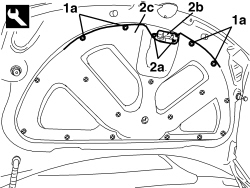
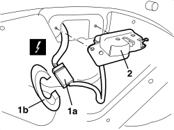
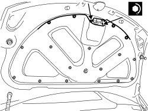

7025B38 BOOT LID LOCK - R+R
- Path
- Procedures > 70 FITTINGS > 7025 COMPARTMENT COVERS > 7025B BOOT LID > 7025B38 BOOT LID LOCK - R+R
- Kind
- repair procedure (removal / refitting; the operation number is the code)
- Applies to
- engines: 2.2 JTS, 3.2 JTS; all production periods
- Interactive page
- https://sloeber94.github.io/elrnDB-aBrrSpdr/en/#/946004069
Applies to: engines: 2.2 JTS, 3.2 JTS; all production periods
 Removing
Removing
 Refitting
Refitting- Open the boot lid.
1. Release the retaining buttons (1a) using the special tool.
Tool | Description | Function | Validity |
|---|---|---|---|
1823015000 | Knife | Retainer removal |
2. Undo the bolts (2a) and move the lock (2b) after having moved the edge (2c) of the trim slightly.

Applies to: engines: 2.2 JTS, 3.2 JTS; all production periods
1. Disconnect the electrical connection (1a) after having released the protection (1b).
Description | Component |
|---|---|
BOOT LOCK GEARED MOTOR |
2. Keep the lock and motor and wiring.

Applies to: engines: 2.2 JTS, 3.2 JTS; all production periods
- If necessary, remove the motor.
Op. 7025B70 BOOT LOCK MOTOR - R R AND CHECK LOCK SUPPLY LINE
Applies to: engines: 2.2 JTS, 3.2 JTS; all production periods
Refitting
Removing- Check that the lock and the motor and wiring are not damaged.
Op. 7025B70 BOOT LOCK MOTOR - R R AND CHECK LOCK SUPPLY LINE
- Connect the electrical connection and attach the protection.
- Position the lock and motor and bridge.
- Tighten the bolts.
- Position the edge of the trim fasten it using the retaining buttons.
- Check that the lock is working properly.
- Position the lock and motor and bridge.
- Tighten the bolts to the recommended torque.
Component | Fastening | dia | Value (daNm) | Validity |
|---|---|---|---|---|
BOOT LID LOCK | Bolt | - | 0.7 ÷ 1.1 |

Applies to: engines: 2.2 JTS, 3.2 JTS; all production periods
- Position the edge of the trim fasten it using the retaining buttons.
- Check that the lock is working properly.